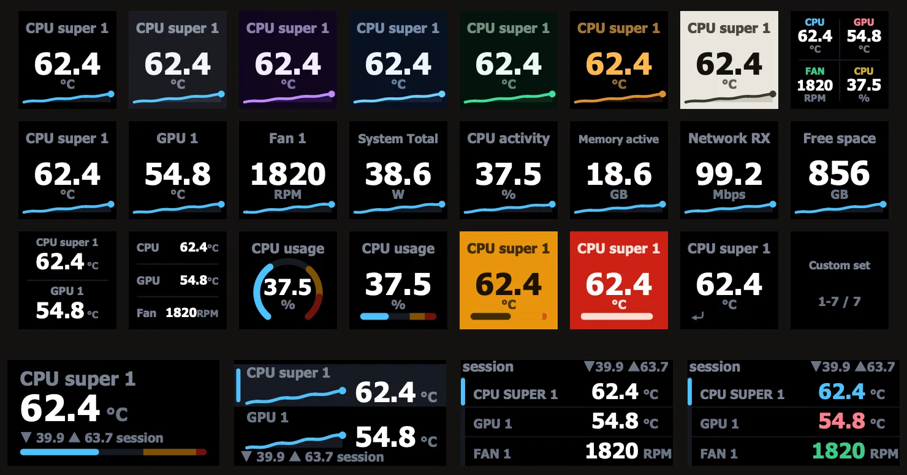

macOS · version 1.0.1
Mac Sensors
Temperatures, fan speeds, power, CPU activity, memory, storage and network from your Mac. One to four readings on a key, a sparkline, bar or ring, and amber and red alerts. It only reads: no fan control, no administrator password, no helper app.

macOS 13.5 or laterStream Deck 7.1 or laterApple silicon and Intel